Analiza mediului extern (II)
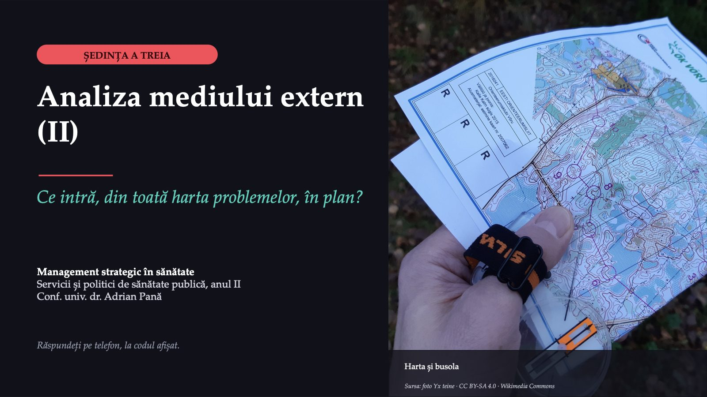
1 / 47Întrebarea ședinței este: ce intră, din toată harta problemelor, în planul unei organizații de sănătate?
Harta avea multe căsuțe goale
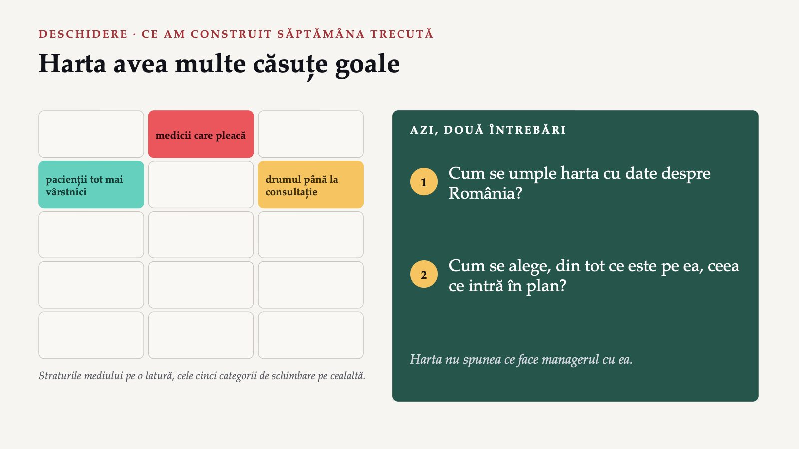
2 / 47Săptămâna trecută ați construit harta problemelor: un tabel cu straturile mediului pe o latură și cele cinci categorii de schimbare pe cealaltă. Harta avea însă multe căsuțe goale și nu spunea ce face managerul cu ea. Azi răspundem la două întrebări: cum se umple harta cu date despre România și cum se alege, din tot ce este pe ea, ceea ce intră în plan.
Ce intră, din toată harta, în plan?
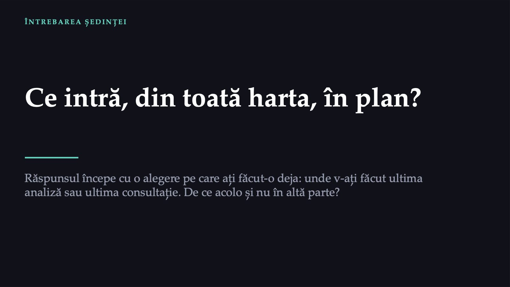
3 / 47Gândiți-vă la ultima analiză sau la ultima consultație pentru care voi sau cineva din familia voastră ați ales între două locuri. De ce ați ales unul și nu celălalt? Drumul, programul, așteptarea, un medic recomandat? Răspunsul vostru este punctul de plecare al ședinței.
Un aparat, două programe
![CAZ CONSTRUIT PENTRU CURS Un aparat, două programe SPITALUL JUDEȚEAN · SERVICIUL RMN PROGRAMUL • Lucrează în zilele lucrătoare, dimineața și la prânz. • Pacienții trimiși de medici așteaptă câteva săptămâni pentru o programare decontată. CENTRUL PRIVAT · DESCHIS ANUL TRECUT PROGRAMUL • Contract cu casa județeană pentru o parte din investigații. • Lucrează în fiecare zi, până seara târziu. • Investigații plătite direct, pentru cine nu vrea să aștepte. Spitalul și centrul nu există. Regulile și datele despre România folosite mai departe sunt reale.](diapozitive/C03/004.jpg) 4 / 47
4 / 47Situația este construită pentru acest curs. Spitalul județean are un aparat de rezonanță magnetică (RMN), care lucrează în zilele lucrătoare, dimineața și la prânz. Anul trecut, în același oraș s-a deschis un centru privat de imagistică, care lucrează în fiecare zi până seara târziu.
Ce observă șeful laboratorului de radiologie
 5 / 47
5 / 47După câteva luni, șeful laboratorului de radiologie al spitalului observă trei lucruri. Managerul pregătește planul spitalului și are pe birou harta problemelor din cursul trecut. Întrebarea lui este a voastră: ce trebuie să intre în plan?
De ce merg pacienții din oraș la centrul privat?
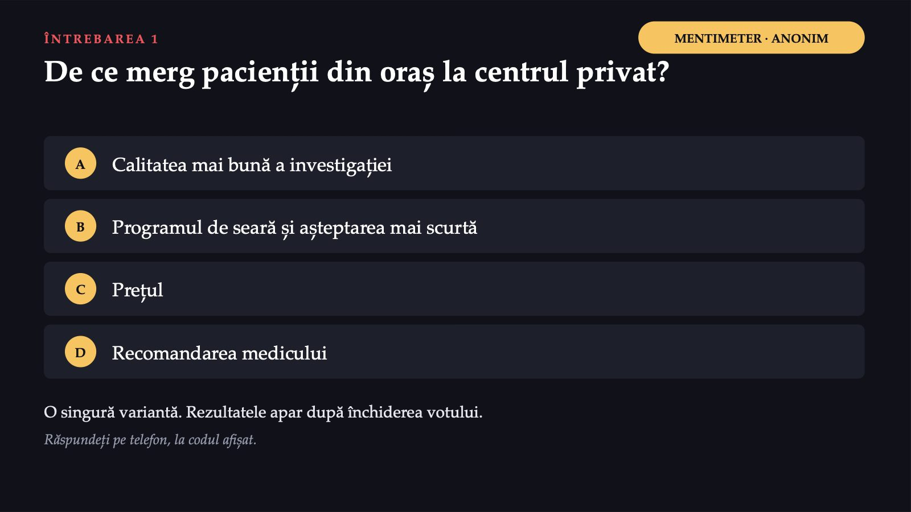
6 / 47Vot anonim pe telefon: ce explică cel mai bine de ce pacienții din oraș merg la centrul privat? O singură variantă.
Programul și așteptarea, nu calitatea
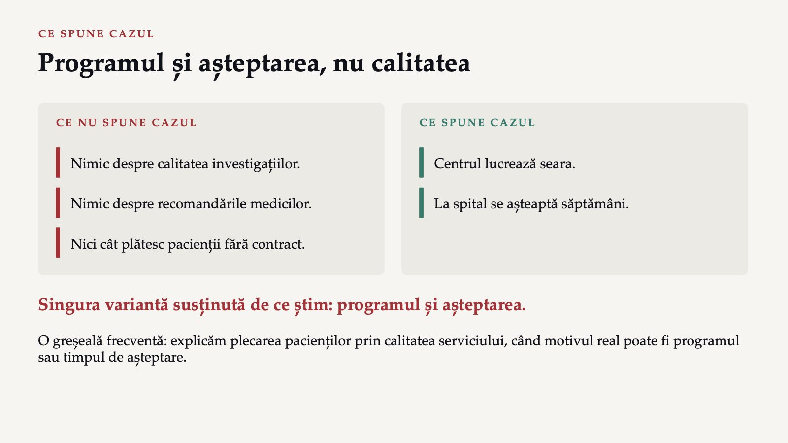
7 / 47Cazul nu spune nimic despre calitatea investigațiilor și nici despre recomandările medicilor. El spune, în schimb, că centrul lucrează seara și că la spital se așteaptă săptămâni. Varianta cu programul și așteptarea este, așadar, singura susținută de ce știm.
Nu tot ce e pe hartă intră în plan
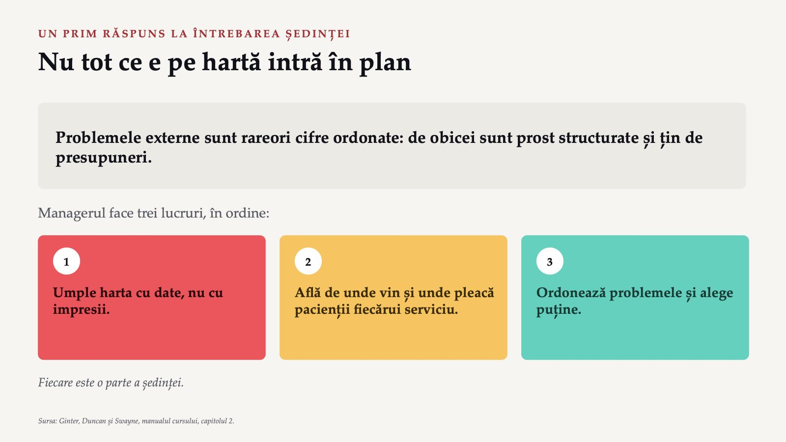
8 / 47Întrebarea ședinței, ce intră din toată harta în plan, are deja un răspuns provizoriu: nu tot. Managerul din caz trebuie deci să facă trei lucruri, în ordine: să umple harta cu date, nu cu impresii; să înțeleagă de unde vin și unde pleacă pacienții fiecărui serviciu; să ordoneze problemele și să aleagă puține.
Ce v-a făcut ultima dată să alegeți un anumit loc pentru o analiză sau o consultație?
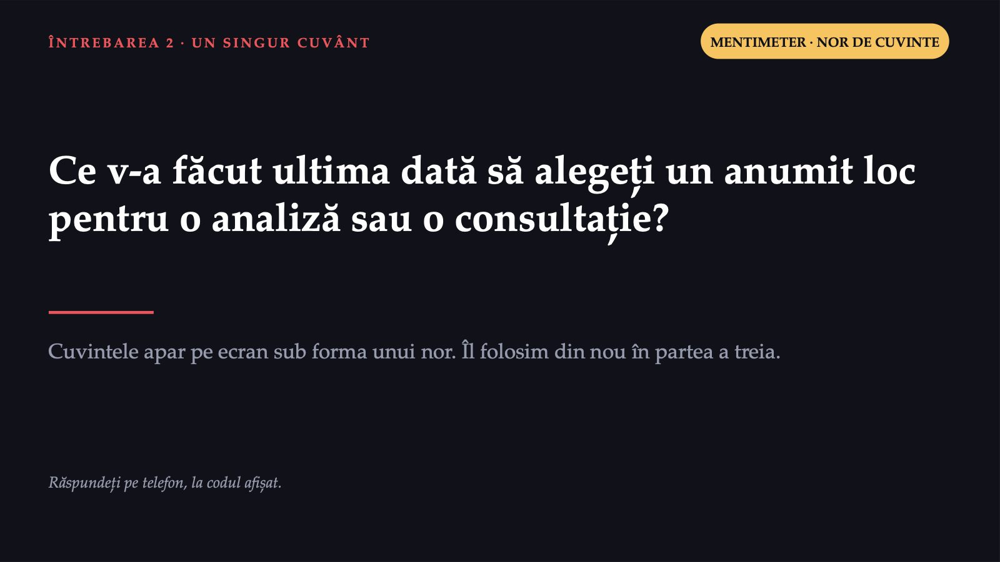
9 / 47Pe Mentimeter, un singur cuvânt: ce v-a făcut ultima dată să alegeți un anumit loc pentru o analiză sau o consultație? Cuvintele apar pe ecran sub forma unui nor.
Cinci lentile pe România
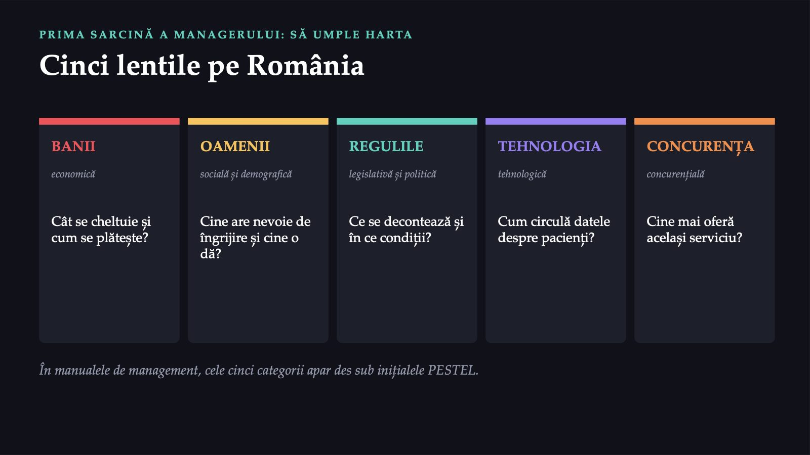
10 / 47Prima sarcină a managerului este să umple harta. Pentru fiecare categorie, el caută ce s-a schimbat în ultimii ani în țară, în sistemul de sănătate și în aria spitalului lui. Fiecare categorie are întrebarea ei, datele publice care o lămuresc și ce înseamnă ele pentru un spital.
5,8%
 11 / 47
11 / 47România cheltuie pe sănătate mai puțin decât orice altă țară din Uniunea Europeană, dacă socotim pe locuitor. În 2023, cheltuiala a fost de 1 800 de euro pe locuitor, ajustată la diferențele de putere de cumpărare, adică mai puțin de jumătate din media europeană de 3 832 de euro.
Banii publici, banii din buzunar și tariful
![BANII · CINE PLĂTEȘTE ȘI CUM Banii publici, banii din buzunar și tariful Din 100 de euro cheltuiți pe sănătate, 2023 77 publici 23 Banii privați: aproape toți plătiți direct de pacienți. INFLAȚIA MEDIE ANUALĂ 5,8% în 2024, 6,8% în 2025; media Uniunii: 2,5%. Costurile cresc mai repede decât tarifele. CUM AJUNG BANII LA SPITAL Plata pe caz: spitalul câștigă unde tariful acoperă costul și pierde în rest. Pe hartă: diferența dintre cost și tarif, urmărită periodic. Sursa: OCDE și Observatorul European, profilul de țară România, 2025; Eurostat.](diapozitive/C03/012.jpg) 12 / 47
12 / 47Din cheltuiala totală din 2023, sursele publice au acoperit 77%, iar restul de 23% a venit din bani privați, aproape în întregime plătiți direct de pacienți. Felul în care se plătește contează la fel de mult ca suma. Un spital plătit pe caz câștigă din cazurile pentru care tariful acoperă costul și pierde din celelalte.
Mai mulți vârstnici, acces inegal
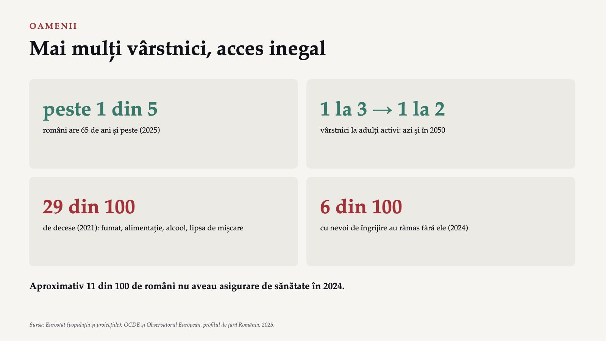
13 / 47Un vârstnic revine astăzi la aproximativ trei adulți de vârstă activă, iar proiecțiile Eurostat arată un raport de aproximativ un vârstnic la doi adulți în 2050. Pentru un spital, îmbătrânirea înseamnă mai multe boli cronice, mai multă recuperare și mai multă îngrijire de lungă durată, deci alt amestec de servicii.
Un cerc vicios
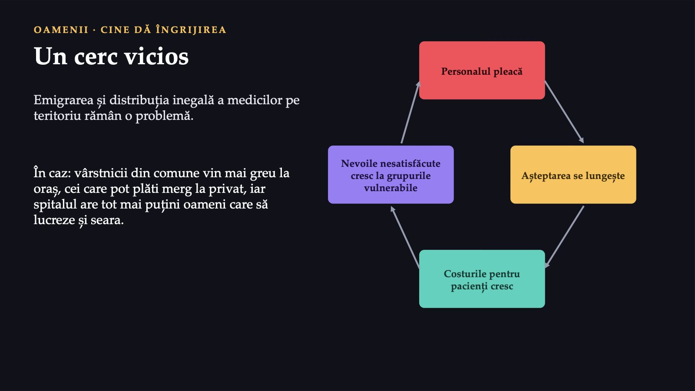
14 / 47Pentru spitalul din caz, cele trei fapte se leagă. Prezentarea cursului vorbește aici despre un cerc vicios: plecarea personalului lungește așteptarea, așteptarea crește costurile pentru pacienți, iar nevoile nesatisfăcute cresc tocmai la grupurile vulnerabile.
Două documente care se schimbă des
![REGULILE · CE SE DECONTEAZĂ ȘI ÎN CE CONDIȚII Două documente care se schimbă des HOTĂRÂREA GUVERNULUI NR. 521 DIN 2023 Contractul-cadru și pachetele de servicii; forma actualizată, publicată de CNAS în ianuarie 2026. NORMELE METODOLOGICE DE APLICARE Ordin comun al Ministerului Sănătății și al CNAS: cum se contractează serviciile. TREI CONSECINȚE PENTRU UN SPITAL 1 Calendarul: presupunerile se revăd în fiecare trimestru. 2 Stimulentele: o procedură decontată în spitalizarea de zi mută cazurile. 3 Conformitatea: fără respectarea Normelor, fără contract.](diapozitive/C03/015.jpg) 15 / 47
15 / 47Pentru un furnizor de servicii medicale din România, cele mai importante sunt două documente care se schimbă des: Contractul-cadru, aprobat împreună cu pachetele de servicii prin Hotărârea Guvernului nr. 521 din 2023, și Normele metodologice de aplicare. Pachetele definesc ce servicii sunt decontate și pe ce traseu ajunge pacientul la ele.
Fără acreditare, fără contract
![REGULILE · ACREDITAREA Fără acreditare, fără contract LEGEA NR. 95 DIN 2006 · ART. 173 ALIN. (1) · EXTRAS „Neobținerea acreditării în termen de 5 ani de la emiterea autorizației de funcționare conduce la imposibilitatea încheierii contractului de furnizare servicii medicale cu casele de asigurări de sănătate” Acreditarea este una dintre barierele pe care le întâlnește un spital nou care vrea să intre pe piață. Sursa: Legea nr. 95 din 2006 privind reforma în domeniul sănătății, art. 173 alin. (1), ultima frază.](diapozitive/C03/016.jpg) 16 / 47
16 / 47Pentru spitale, accesul la banii publici depinde și de acreditare. Un spital care nu obține acreditarea în 5 ani de la autorizația de funcționare nu poate încheia contract cu casele de asigurări de sănătate. Acreditarea este, astfel, una dintre barierele pe care le întâlnește un spital nou care vrea să intre pe piață.
Termene fixate în textul european
![TEHNOLOGIA · DATELE DESPRE PACIENȚI Termene fixate în textul european Regulamentul (UE) 2025/327 referitor la spațiul european al datelor privind sănătatea (SEDS) 11 februarie 2025 adoptat 26 martie 2027 se aplică 26 martie 2029 o parte din drepturile pacienților asupra datelor; folosirea datelor în cercetare, cu câteva excepții 26 martie 2031 restul categoriilor de date Norme și infrastructuri comune pentru datele de sănătate. Pentru un spital: sisteme informatice compatibile. Sursa: Regulamentul (UE) 2025/327, textul în limba română.](diapozitive/C03/017.jpg) 17 / 47
17 / 47Regulamentul (UE) 2025/327 referitor la spațiul european al datelor privind sănătatea a fost adoptat la 11 februarie 2025 și se aplică de la 26 martie 2027. Drepturile pacienților asupra datelor lor și schimbul acestor date se aplică eșalonat, pe categorii de date, de la 26 martie 2029 și de la 26 martie 2031.
300 mil. €
![TEHNOLOGIA · ÎN CAZUL NOSTRU Și problemă, și oportunitate 300 mil. € din PNRR pentru digitalizarea sistemului de sănătate Consultațiile la distanță rămân, totuși, puțin folosite în România. PROBLEMA Programele spitalului nu comunică bine cu cele ale caselor de asigurări și ale altor furnizori; conformarea cere timp și oameni. OPORTUNITATEA Controale la distanță pentru pacienții din comune; programări online pentru examenul RMN, cu reamintiri care reduc neprezentările. Sursa: OCDE și Observatorul European, profilul de țară România, 2025.](diapozitive/C03/018.jpg) 18 / 47
18 / 47Profilul de țară din 2025 arată că Planul național de redresare și reziliență alocă 300 de milioane de euro pentru digitalizarea sistemului de sănătate. Același profil arată însă că folosirea consultațiilor la distanță rămâne limitată în România. Pentru spitalul din caz, tehnologia este și o problemă, și o oportunitate.
23 din 100
![CONCURENȚA · CINE MAI OFERĂ ACELAȘI SERVICIU Piața se definește pe fiecare serviciu 23 din 100 de euro (2023), plătiți direct, mai ales pe medicamente Cererea pentru imagistica privată: o presupunere de verificat. CE SE URMĂREȘTE 1 Jucătorii: spitale, ambulatorii, imagistică, clinici 2 Barierele: acreditarea, personalul, investițiile 3 Înlocuirea unui serviciu cu altul 4 Furnizorii care leagă consultația de procedură Spitalul din caz concurează cu centrul privat numai în imagistică. Sursa: OCDE și Observatorul European, profilul de țară România, 2025.](diapozitive/C03/019.jpg) 19 / 47
19 / 47Plățile directe ale pacienților sunt mari: aproape toată cheltuiala privată, adică 23% din total în 2023, este plătită din buzunar, în mare parte pentru medicamente. Concluzia practică a prezentării cursului este că piața se definește pe fiecare linie de servicii, nu pe tot spitalul.
Care este problema cea mai importantă a spitalului?
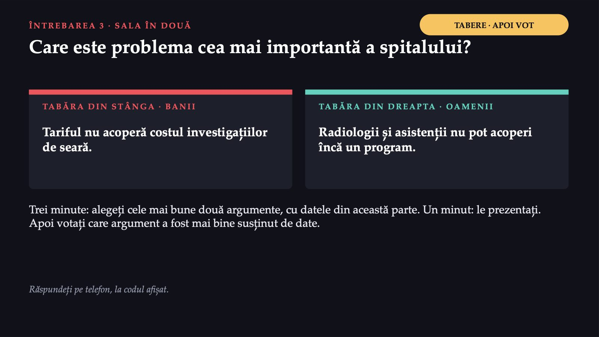
20 / 47Tabăra din stânga susține că problema cea mai importantă a spitalului din caz este banii. Tabăra din dreapta susține că problema cea mai importantă sunt oamenii. Un argument cântărește mai mult când folosește o cifră cu sursa ei.
„România, ultima din UE la cheltuielile pentru sănătate. Cât se cheltuie pentru fiecare cetățean”
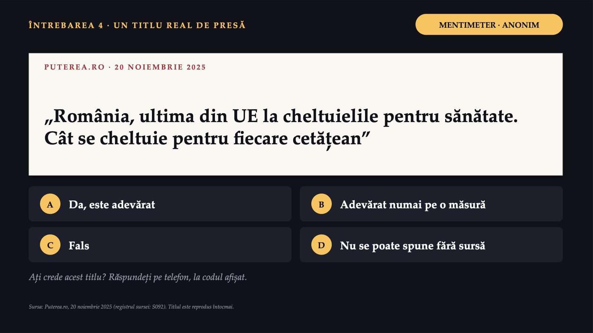
21 / 47Un titlu real, publicat de Puterea.ro la 20 noiembrie 2025: „România, ultima din UE la cheltuielile pentru sănătate. Cât se cheltuie pentru fiecare cetățean”. Ați crede acest titlu?
Adevărat pe o măsură, nu pe toate
 22 / 47
22 / 47Titlul se verifică cu profilul de țară. Pe locuitor, cheltuiala României este cea mai mică din Uniunea Europeană. Ca pondere în economie, cheltuiala este cu mult sub media europeană, dar profilul nu spune că ar fi cea mai mică. Pe hartă se scrie, de aceea, fraza verificată, nu titlul.
Zece minute de pauză
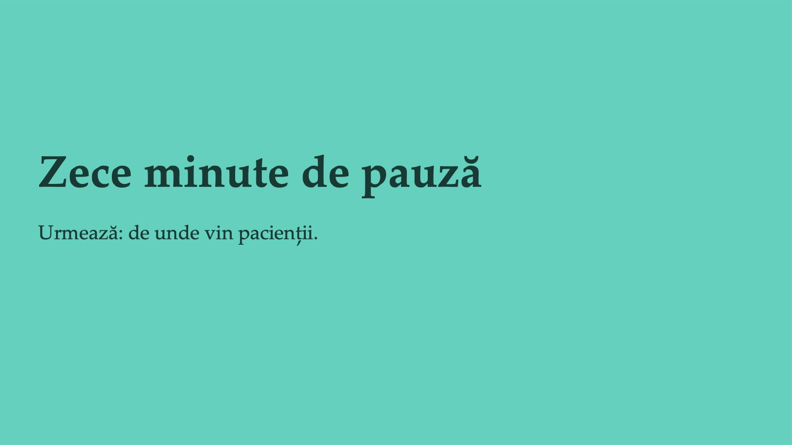
23 / 47Un spital, mai multe arii
![DE UNDE VIN PACIENȚII Un spital, mai multe arii Pentru un copil cu cancer, părinții călătoresc oricât; controlul copilului sănătos se face aproape de casă. Linia de servicii Ce mărește aria Ce micșorează aria Urgențele dotările critice, reputația durata drumului, barierele rutiere Chirurgia de o zi programul prelungit, așteptarea scurtă programul limitat, așteptarea lungă Oncologia tehnologia rară, echipa cunoscută rar ceva Recuperarea calitatea, apropierea de casă vizitele dese Sursa: Ginter, Duncan și Swayne, manualul cursului, capitolul 2; prezentarea cursului.](diapozitive/C03/024.jpg) 24 / 47
24 / 47Manualul pornește de la un exemplu din pediatrie. Aria de servicii a hematologiei-oncologiei pediatrice este mult mai mare decât cea a îngrijirii copilului sănătos. Într-un spital mare, aria serviciilor cardiace poate cuprinde o regiune întreagă, iar a camerei de gardă doar câteva străzi. De aceea, o organizație cu mai multe categorii de servicii poate avea nevoie de mai multe analize ale ariei.
Care serviciu al spitalului județean are aria cea mai mare?
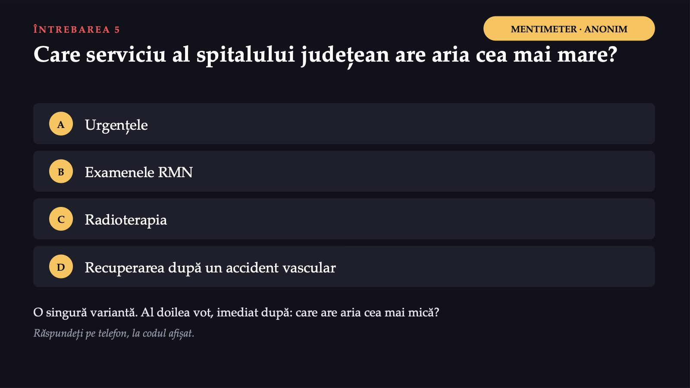
25 / 47Vot anonim pe telefon, pentru spitalul județean din caz: care dintre aceste servicii are aria cea mai mare? Al doilea vot, imediat după: care are aria cea mai mică?
Aria cea mai mică, aria cea mai mare
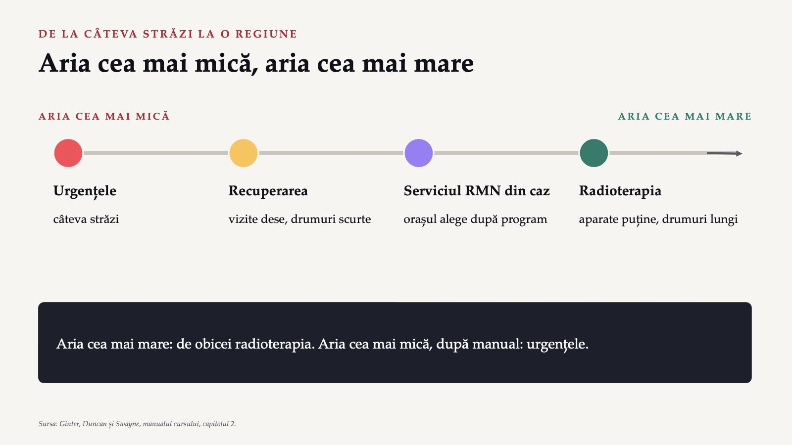
26 / 47La primul vot, radioterapia are, de obicei, aria cea mai mare: aparatele de radioterapie sunt puține, iar oamenii acceptă drumuri lungi pentru tratament. La al doilea vot, răspunsul sprijinit de manual este urgențele: în exemplul lui, aria camerei de gardă cuprinde doar câteva străzi.
Determinanții ariei de servicii
![PRIMUL TERMEN NOU Determinanții ariei de servicii În cuvinte de zi cu zi: de ce alege un pacient un loc și nu altul. DE PARTEA PACIENTULUI tipul serviciului de care are nevoie cât de des îl folosește preferința pentru un furnizor valorile, experiențele, starea de sănătate DE PARTEA PIEȚEI drumul, transportul, parcarea programul, prețul, imaginea așteptarea, felul în care e tratat calitatea informației Comparați cu norul vostru de cuvinte. Sursa: Ginter, Duncan și Swayne, manualul cursului, capitolul 2.](diapozitive/C03/027.jpg) 27 / 47
27 / 47Votul din prima parte și norul de cuvinte au arătat deja ce îi face pe pacienți să aleagă. Manualul ordonează aceste motive în două grupe. În cuvinte de zi cu zi, determinanții ariei de servicii sunt motivele pentru care un pacient alege un loc și nu altul: unele țin de el, altele țin de ce i se oferă.
Trei greșeli de evitat
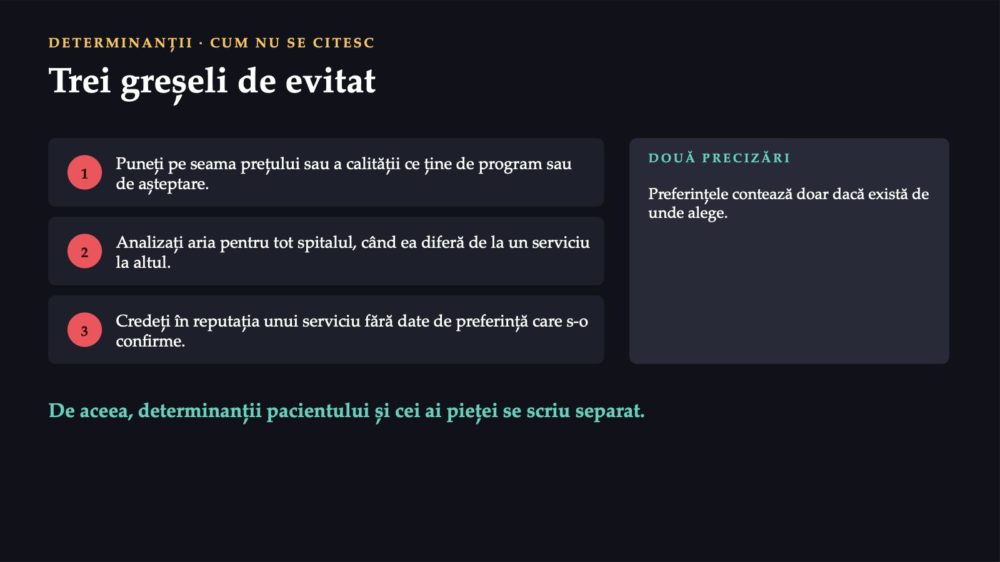
28 / 47Prezentarea cursului atrage atenția asupra a trei greșeli. Prima este să puneți pe seama prețului sau a calității ceea ce ține, de fapt, de program sau de așteptare; de aceea, determinanții consumatorului și cei ai pieței se scriu separat. A doua este să analizați aria pentru tot spitalul. A treia este să credeți în reputația unui serviciu fără date de preferință care s-o confirme.
Patru întrebări pentru fiecare serviciu
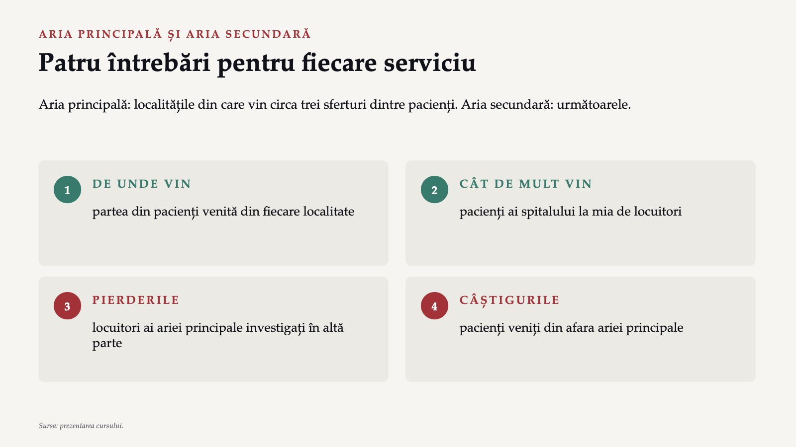
29 / 47Indicatorii sunt simpli și se calculează în cuvinte înainte de a se calcula în cifre. Primul arată de unde vin pacienții. Al doilea arată cât de mult vin la spital locuitorii unei localități: câți pacienți ai serviciului vin la mia de locuitori ai localității. Al treilea arată pierderile. Al patrulea arată câștigurile.
Serviciul RMN al spitalului județean, în cifre
 30 / 47
30 / 47Valori ipotetice. Într-un an, serviciul RMN al spitalului județean are 4 000 de pacienți. Partea care vine din municipiu și din localitățile din jur, împreună, este 3 000 din 4 000, adică 75 din 100: acestea formează aria principală. Investigațiile plătite direct la centrul privat nu apar în datele casei, deci pierderile reale pot fi mai mari.
Centrul privat mai atrage cinci sute de pacienți din aria principală, iar spitalul îi pierde pe toți. Cât devin pierderile?
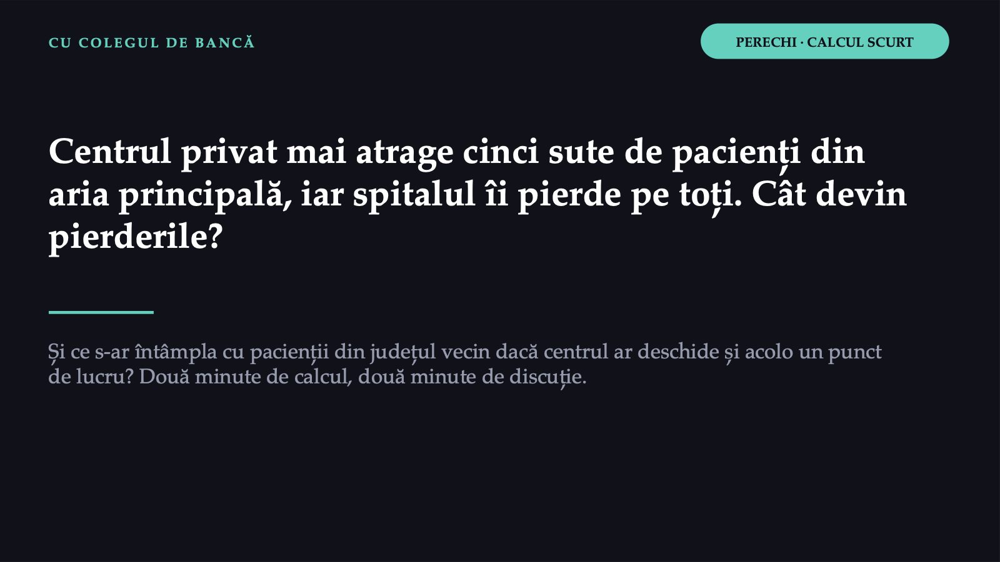
31 / 47În perechi, cu datele din exemplu: dacă centrul privat mai atrage cinci sute de pacienți din aria principală, iar spitalul îi pierde pe toți, cât devin pierderile spitalului? Și ce credeți că s-ar întâmpla cu pacienții din județul vecin dacă centrul privat ar deschide și acolo un punct de lucru?
Pierderile urcă la puțin peste o treime
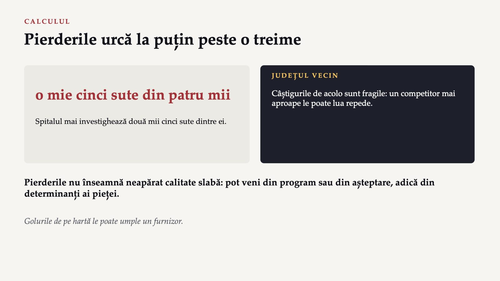
32 / 47Calculul se face păstrând numărul total al locuitorilor ariei principale care au nevoie de investigație. Dacă spitalul mai pierde cinci sute dintre ei, pierderile urcă la o mie cinci sute din patru mii, adică puțin peste o treime. Întrebarea a doua nu are un răspuns de calculat: câștigurile spitalului din județul vecin sunt fragile.
O duzină de probleme, un singur plan
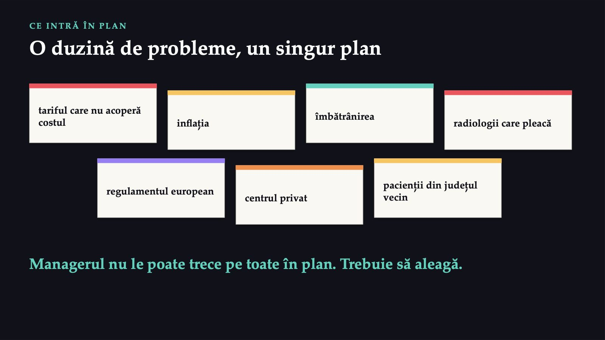
33 / 47Harta este acum plină. Managerul din caz are pe ea cel puțin o duzină de probleme: tariful care nu acoperă costul, inflația, îmbătrânirea, radiologii care pleacă, regulamentul european, centrul privat, pacienții din județul vecin. Nu le poate trece pe toate în plan. Trebuie să aleagă.
Prioritizarea după impact și probabilitate
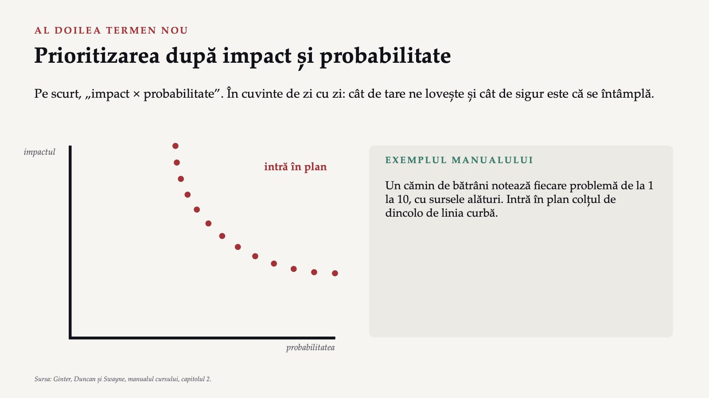
34 / 47În cuvinte de zi cu zi, prioritizarea după impact și probabilitate, pe scurt „impact × probabilitate”, înseamnă a pune două întrebări fiecărei probleme: cât de tare ne lovește și cât de sigur este că se întâmplă. Manualul presupune că metoda este folosită larg probabil pentru că este relativ simplă.
Trei probleme ale spitalului, notate
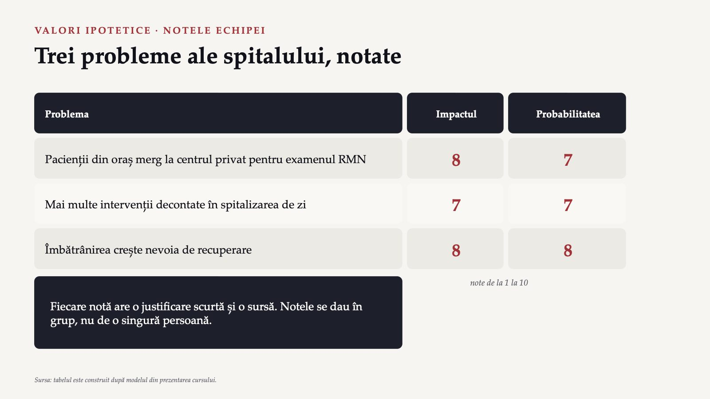
35 / 47Valori ipotetice. Prezentarea cursului adaugă patru reguli de notare. Impactul se judecă după câte servicii sunt atinse, după costuri, după calitate și după riscul pentru reputație, într-un orizont de timp precizat. Probabilitatea se judecă din serii de date și din judecata unor oameni informați. Notele se dau în grup, nu de o singură persoană, pentru a reduce părtinirea.
Ce notă dați impactului și probabilității?
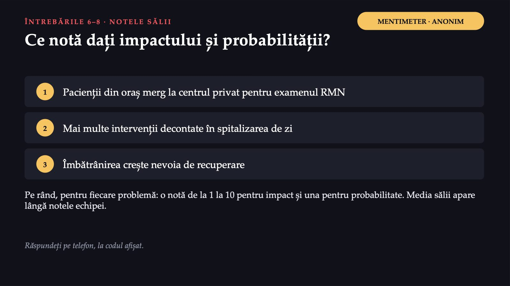
36 / 47Pentru fiecare problemă, o notă pentru impact și una pentru probabilitate. Diferența dintre notele voastre și cele ale echipei nu arată cine are dreptate. Ea arată unde trebuie căutate mai multe date.
Cinci feluri de a cere judecata altora
![JUDECATA ALTORA Cinci feluri de a cere judecata altora 1 Experți consultați pe rând, separat (metoda Delphi) 2 Idei scrise în tăcere, apoi votate (grupul nominal) 3 Idei spuse liber, fără judecată (brainstormingul) 4 Un grup mic, o singură temă (grupul focus) 5 Două echipe care susțin opusul (ancheta dialectică) CE ALEGE ORGANIZAȚIA Mică: propriii oameni, grup nominal, brainstorming. Mare: experți din afară, dezbateri, scenarii. Graficele sunt doar un punct de plecare; extrapolarea cere judecată. Sursa: Ginter, Duncan și Swayne, manualul cursului, capitolul 2.](diapozitive/C03/037.jpg) 37 / 47
37 / 47Manualul numește opinia experților perspectiva unor oameni bine informați asupra unei probleme, folosită pentru a identifica, urmări, prognoza și evalua tendințele externe. Alegerea metodei depinde de mărimea organizației, de cât de diverse îi sunt serviciile și de cât de complicată îi este piața.
Părțile interesate
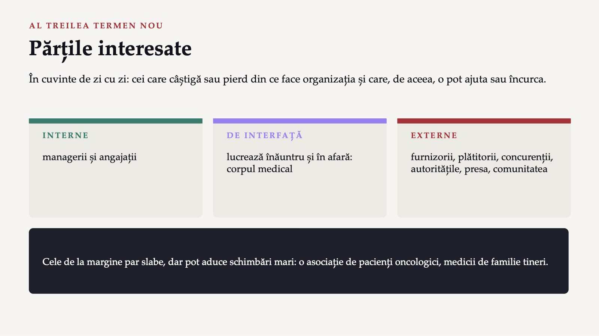
38 / 47Experții nu sunt singurii oameni a căror părere contează. O strategie poate fi blocată de cine nu a fost întrebat. În cuvinte de zi cu zi, părțile interesate sunt toți cei care câștigă sau pierd din ce face organizația și care, de aceea, o pot ajuta sau încurca.
Puterea și interesul
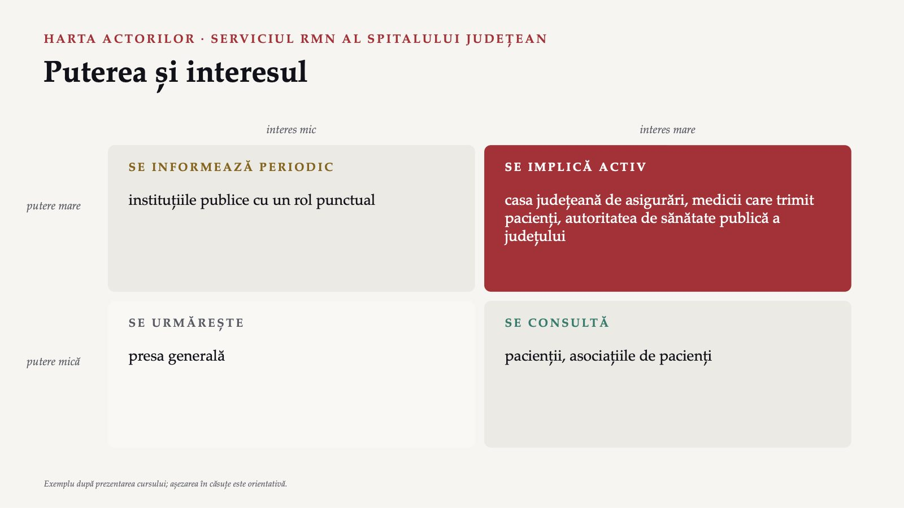
39 / 47Actorii cu putere mare și interes mare se implică activ în decizii. Cei cu putere mare și interes mic se informează periodic. Cei cu putere mică și interes mare se consultă. Cei cu putere mică și interes mic se urmăresc.
Programul de seară: cine trebuie întrebat?
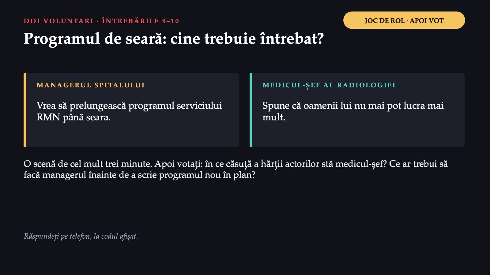
40 / 47Unul dintre voluntari este managerul spitalului județean, care vrea să prelungească programul serviciului RMN până seara. Celălalt este medicul-șef al laboratorului de radiologie, care spune că oamenii lui nu mai pot lucra mai mult.
Medicul-șef: putere mare, interes mare
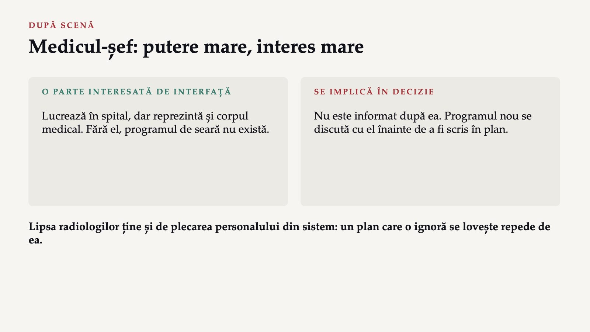
41 / 47Medicul-șef este o parte interesată de interfață: lucrează în spital, dar reprezintă și corpul medical, iar fără el programul de seară nu există. Are putere mare și interes mare, deci trebuie implicat în decizie, nu informat după ea.
Presupunerile se verifică, scenariile se scriu mai multe
![DUPĂ CE PLANUL E SCRIS Presupunerile se verifică, scenariile se scriu mai multe ÎN FIECARE TRIMESTRU Se reiau problemele, se caută semnale noi, se renotează; proiectele se schimbă dacă o presupunere cade. Semnale: așteptarea care crește, ce spun medicii care trimit, un proiect de act normativ. CÂND VIITORUL E FOARTE NESIGUR Mai multe povești coerente despre viitor, cu nume distincte, ca nimeni să nu privească numai la cea „mai probabilă”. Sursa: Ginter, Duncan și Swayne, manualul cursului, capitolul 2.](diapozitive/C03/042.jpg) 42 / 47
42 / 47Prezentarea cursului transformă verificarea presupunerilor într-un ciclu trimestrial. Semnalele slabe, adică indiciile timpurii ale unei tendințe care abia începe, se interpretează adesea pe puține date sigure; de aceea merită urmărite din timp. Când viitorul este foarte nesigur, manualul recomandă scenariile.
„Programul prelungit al centrului privat nu va mări pierderile spitalului.”
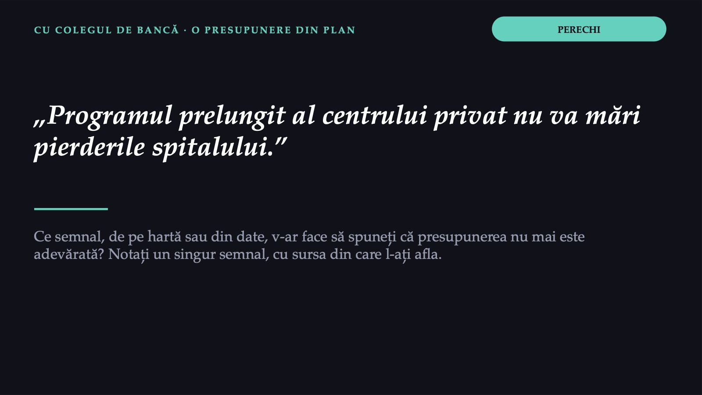
43 / 47Managerul spitalului județean a scris în plan presupunerea: programul prelungit al centrului privat nu va mări pierderile spitalului. Un semnal fără sursă, de tipul „am auzit că…”, este un început de urmărire, nu o dovadă.
Zece întrebări despre ideile ședinței
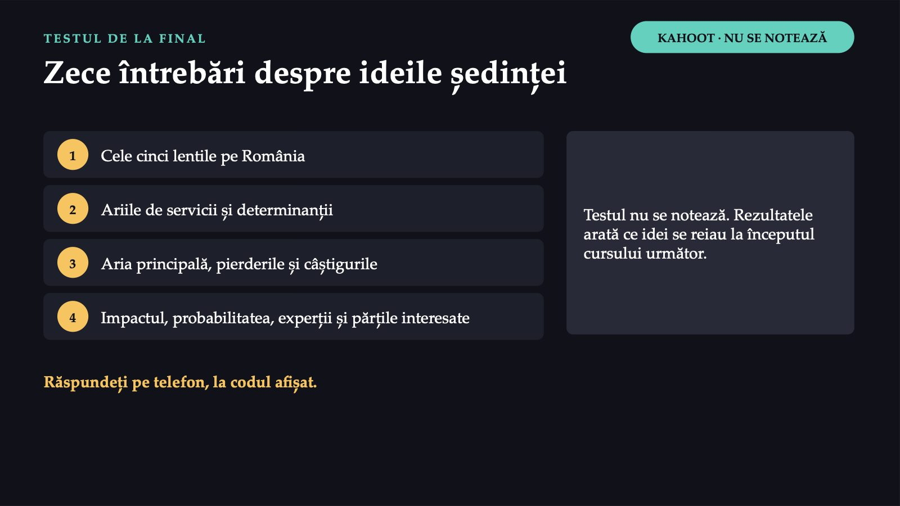
44 / 47Test formativ pe Kahoot, zece întrebări despre ideile ședinței. Testul nu se notează. Rezultatele arată ce idei trebuie reluate la începutul cursului următor.
Ce intră în plan
 45 / 47
45 / 47Managerul spitalului județean poate răspunde acum la întrebarea de la început. În plan nu intră toată harta, ci câteva probleme. Soluția nu se alege încă: prelungirea programului, un parteneriat cu centrul privat sau locuri rezervate pentru oncologie sunt opțiuni care vin după analiza concurenților și după analiza internă.
Ce faceți diferit
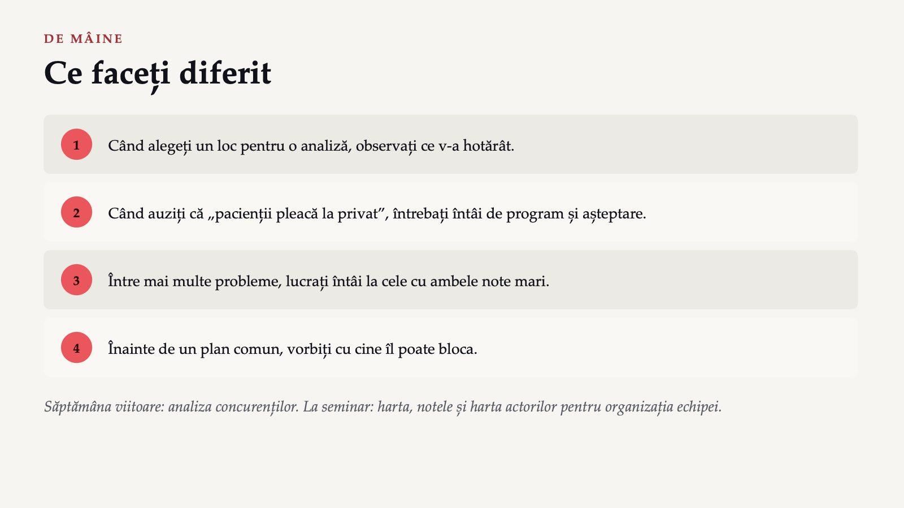
46 / 47Când aveți de ales între mai multe probleme, notați pentru fiecare cât de tare vă afectează și cât de sigur este că se întâmplă, apoi lucrați întâi la cele cu ambele note mari. Săptămâna viitoare, cursul trece de la aria de servicii la cei care o împart cu voi: analiza concurenților din aria de servicii de sănătate.
Trei întrebări pentru final
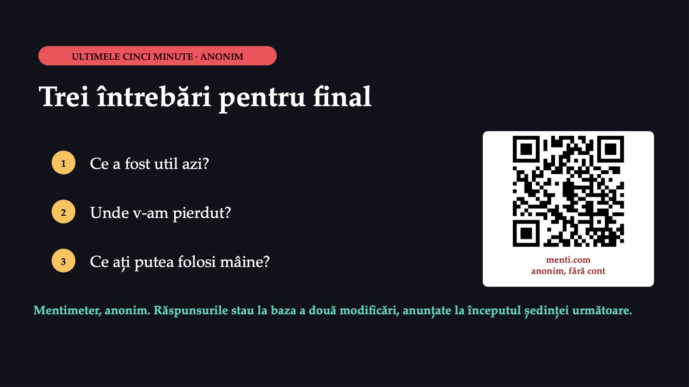
47 / 47Trei întrebări pentru titular, anonim, pe Mentimeter, prin codul QR de pe ultimul diapozitiv. Răspunsurile stau la baza a două modificări, anunțate la începutul ședinței următoare.
Săgeți sau spațiu: navigare · O: vedere de ansamblu · N: notele prezentatorului · F: ecran complet · Esc: închidere